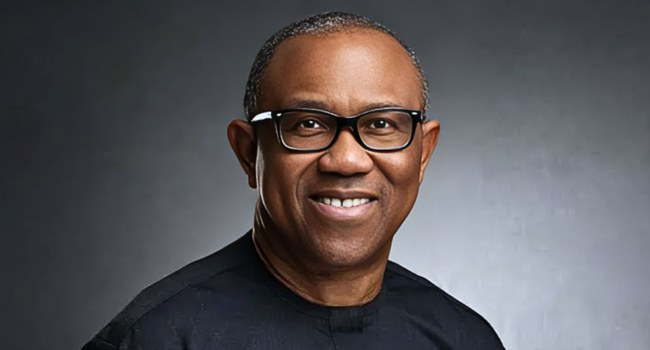

‘This Is A Winning Campaign’, NDC Denies Rift With Obi Over Funding

The Nigeria Democratic Congress (NDC) Presidential Campaign Council has denied reports of a disagreement with its candidate, Peter Obi, over campaign funding. In a statement issued on Monday, council spokesperson Constance Ikokwu said the claims were false and that the party and candidate remained united ahead of the 2027 general election.
Ikokwu said Obi had neither complained that campaign funds were inadequate nor expressed dissatisfaction with the party’s management of campaign finances. She described reports of a rift as an effort to divide the opposition camp and said the campaign was focused on winning the election.
The spokesperson pointed to Obi’s nationwide engagements as evidence of his commitment to the campaign. She said his activity showed energy and consistency, and characterised the campaign so far as a success. The council also said the party and its candidate shared the objective of winning the 2027 presidential election and offering Nigerians what it called a credible alternative.
The statement urged Nigerians to dismiss what Ikokwu described as manufactured controversies, adding that the party and candidate were united and determined. The clarification follows concerns about the control and management of campaign donations after activist Aisha Yesufu launched a fundraising initiative for Obi’s presidential bid. The statement did not provide further details about the initiative or the campaign’s finances.
Source: Channels TV